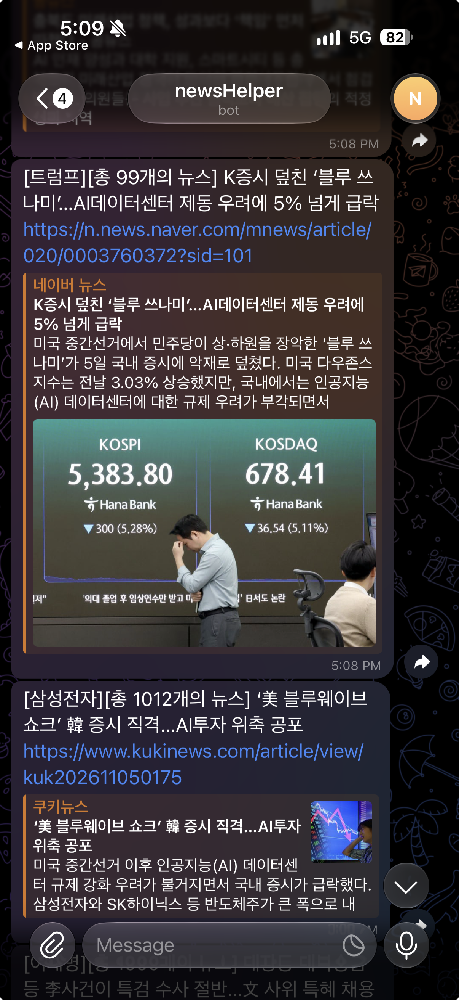

Large Language Models
LLM · Transformer
Attention · 모델 아키텍처
안녕하세요, 인호입니다.
복잡한 문제를 차근차근 풀어가는 일을 좋아합니다.
수능 수학에서 모든 문제를 맞히고 대학에 진학했습니다. 대학 생활 중에는 여러 고3 학생과 재수생에게 수학을 가르쳤습니다. 답에 도달하는 것만큼, 그 풀이를 다른 사람이 이해할 수 있도록 설명하는 과정도 소중한 경험이었습니다.
지금은 한양대학교 컴퓨터소프트웨어학부에서 공부하며, 대규모 언어 모델(LLM)을 깊이 탐구하고 있습니다. 모델의 동작 원리를 이해하고, PyTorch로 구현하며, CUDA 커널과 GPU 연산의 효율까지 살펴봅니다. 이해한 내용을 코드와 글로 정리하는 것이 저의 공부 방식입니다.
공부 밖에서는 스노보드를 타거나, 경제 서적을 읽거나, 영화를 보며 시간을 보냅니다. 최근 가장 재미있게 읽은 책은 『칩워』입니다. 컴퓨터를 공부하는 시선에 경제와 산업을 바라보는 시선을 더하는 일에도 흥미를 느낍니다.
LLM · Transformer
Attention · 모델 아키텍처
PyTorch · CUDA
커널 구현 · 성능 최적화
경제 서적 · 영화 · 스노보드
최근 읽은 책: 『칩워』

실제 수신 화면 ↗군 복무 중 관심 있는 뉴스를 챙겨 보기 위해 AI의 도움을 받아 만든 작은 프로젝트입니다. 네이버 뉴스 검색 API로 키워드별 기사를 수집하고, 새 기사의 제목과 링크를 텔레그램 봇으로 보내도록 구현했습니다. 외부 API를 연결해 데이터 수집부터 알림 전송까지 이어지는 흐름을 경험했습니다.
코드 살펴보기 ↗한 줄의 코드 뒤에 있던 고민들. 제목을 누르면 Velog에서 이어집니다.
검색 결과가 없습니다. 다른 검색어나 주제를 선택해보세요.
코드는 GitHub에, 생각과 배움은 Velog에 남깁니다.
GitHub ↗Velog ↗